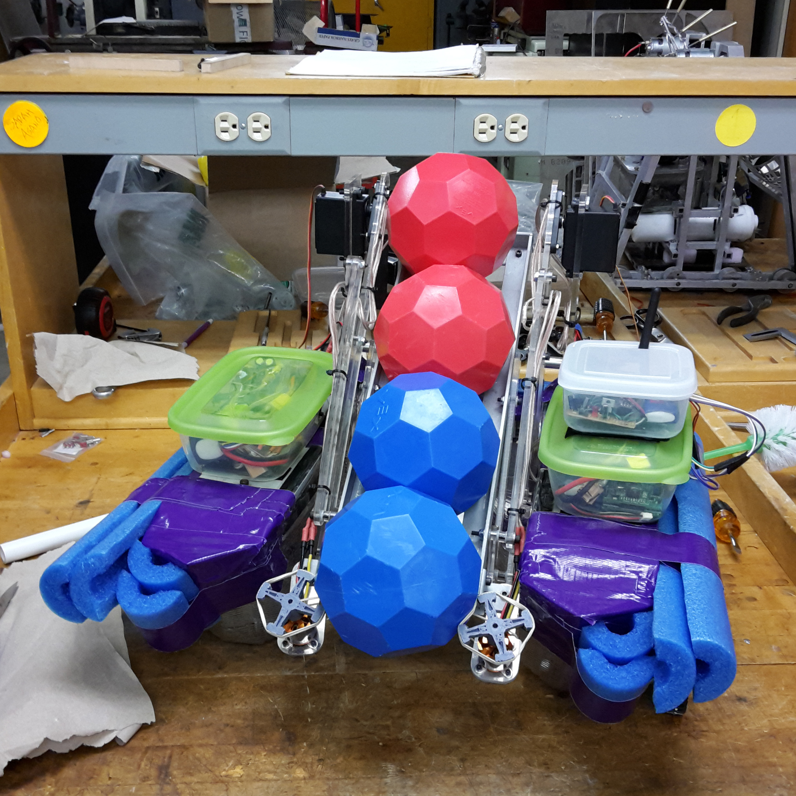

ME 72: Millikan Aquamania October 2014 - March 2015
Overview
As part of ME 72: Engineering Design Laboratory, students spent two quarters designing, building, testing, and ultimately, competing in a robotics competition that serves as the capstone design project for Caltech’s undergraduate Mechanical Engineering degree.
Our team's ME 72 robot prior to competition
Competition Guidelines
The 2015 competition required teams to build amphibious robots capable of securing and moving around small balls in Millikan Pond at Caltech. To score points, balls needed to be deposited into designated scoring zones with specific entry points. The 4-minute competition was broken into two segments. A 30 second period in the beginning of each round allowed teams to receive bonus points for autonomously scaling down a ramp and/or scoring. This was followed by a 3.5-minute radio control period in which teams moved balls across Millikan Pond to score points.
Process
Throughout the two quarters, we had designated milestones to show our progress. These milestones included a: Preliminary Design Review (PDR), Mobility Demonstration, Critical Design Review (CDR), Scoring/Handling Demonstration, and Mock Competition. Our team also documented our milestones through photos and videos as we continually designed, tested, redesigned, and retested our robot.
The making of our ME 72 robot
Results
After 8 rounds, we won Millikan Aquamania, Caltech’s 30th annual ME 72 competition!
Our robot depositing a ball through the barriers to score
Team KATS with our 45 lb trophy